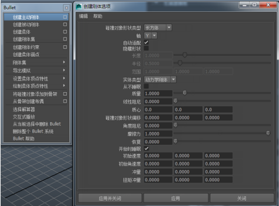

若要创建刚体，请选择“Bullet > 创建主动刚体”(Bullet > Create Active Rigid Body)。
在创建主动刚体后，如果当前时间是 Bullet 解算器的开始时间，用户仍然可以使用 Maya 的“移动”(Move)和“旋转”(Rotate)工具，更改刚体的初始位置和方向。如果当前时间不是解算器的开始时间，时间更改时，将忽略对刚体的位置和方向的更改。Maya 会自动检测新位置和方向并将其存储为初始状态。
如果选择“创建主动刚体”(Create Active Rigid Body)后选择网格，将使用网格的凸面外壳作为其默认碰撞对象从而使刚体与网格关联。如果没有选择网格，将创建一个刚体，使用一个长方体作为其默认碰撞对象形状。可以通过在 bulletRigidBodyShape 节点“属性编辑器”(Attribute Editor)的“刚体特性”(Rigid Body Properties)部分中编辑“实体类型”(Body Type)属性，来更改刚体类型。创建新刚体时，还可以更改所使用的默认设置，方法是点击 Bullet 菜单条目右侧的选项框。

有关 Bullet 刚体类型的说明，请参见 Bullet 刚体类型。有关使用刚体的一些示例工作流，请参见使用 Bullet 刚体创建碰撞、使用 Bullet 刚体创建铰链模拟和破碎刚体模拟。